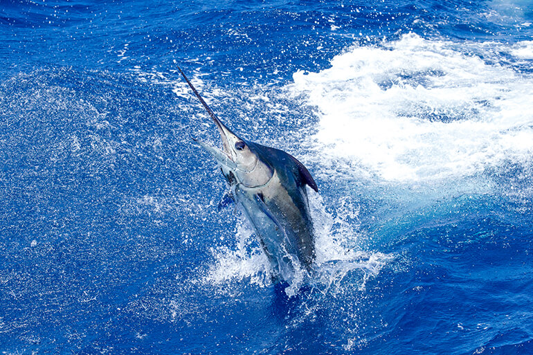
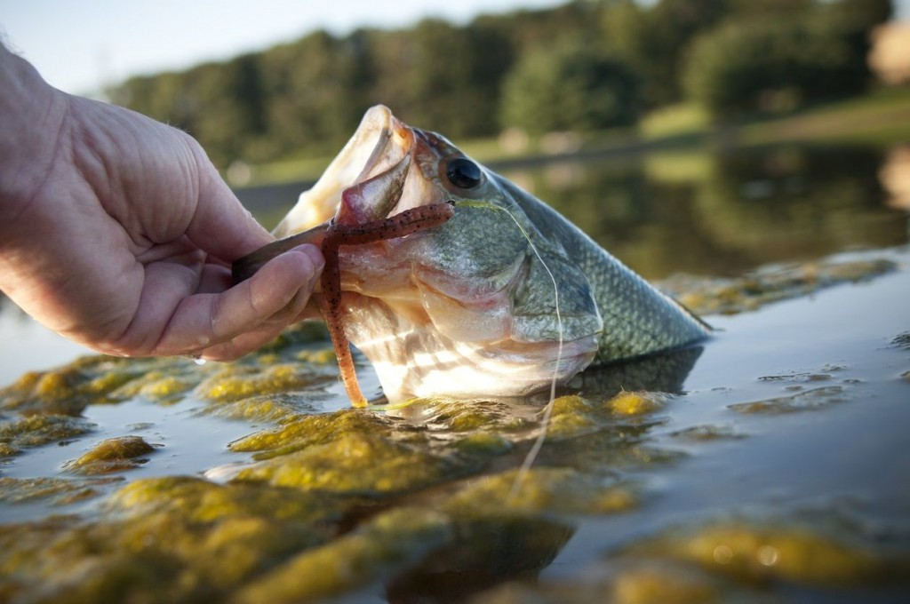

The Caterogries of fishing I am refering can be divided into to two saltwater fishing and freshwater. All recreational fisherman either fish in one of these environments. So whats the difference essentially saltwater fisherman benefit greatly from the abudant ocean for example the fish species in the salt enivorments tend to be much bigger and harder fighting. You generally need stronger tackle and bigger rods which may cost a bit more.Nonetheless is it is worth getting out there and wether in the surf or on a boat to be on or near the ocean is a treat plus in my opinion saltwater fish taste way better then there freshwater Cousins.
Although freshwater environments are not as dramatic as the sea there is still plenty of action to be had.Having fished in areas around Gauteng I must say its quite relaxing to cast your rod into water at a local dam and just chill watching the clouds go by and hooking up to a fat carp.Evening though in my opinion freshwater fish species dont taste good they put up a decent fight nothing like a bass hitting your tackle or a monster catfish in the Vaal. Freshwater tackle is also a lot more affordable and easy on the wallet.In the end there is something for everyone.
| Freshwater | Saltwater |
|---|---|
| Rivers | Surf |
| Streams | Deep Sea |
| Dams | Pier |
| lakes | Estuary |